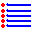

Generazione di nuovi figure
Il programma può generare nuovi figure. Questa opzione è disponibile solo
per alcune delle modalità di gioco. Potete fare che il programma genera un figura con l'opzione di menu Genera figure -> Genera la figura (o con
la combinazione di tasti Ctrl+R). Il programma genererà una figura nuova e potete provare a risolvere immediatamente.
Con l'opzione Genera figure -> Genera figure (o con la combinazione di
tasti Ctrl+Q) si sarà in grado di generare figure massicciamente (fino a 300). Basta inserire il numero di cifre che si intende generare.
Il processo di compilazione è un pò aleatorio: anche così, è possibile
creare qualsiasi figura ripetuta. Questo è il motivo per cui, con
l'opzione di menu Genera figure -> Controllo figure
che lei potrà riesaminare i dati generati Con questa schermata è
possibile rendere il programma controlla se ci sono figure ripetute tra
le forme generate o se le figure generate è già nella raccolta delle
figure del programma. Dopo aver fatto il check, il programma
automaticamente marchio figure ripetute a togliere loro. Potete marchio
altre figure (per esempio, che in alcuni pezzi non sono posti che fanno
una sola figura) con il pulsante elimina ( ).
).
A tutti i figure generati sono assegnato il nome "AUTO", seguito da un
numero generato casualmente. Potete fare il programma renumere
corrispondentemente i figure automaticamente con il pulsante .
Una volta che il cambiamento è fatto, è possibile salvare i dati in un
file. Per giocare con le forme generate, si devono solo usare l'opzione
di menu Programma- >Caricare le figure dell'archivio e selezionare il file
desiderato.